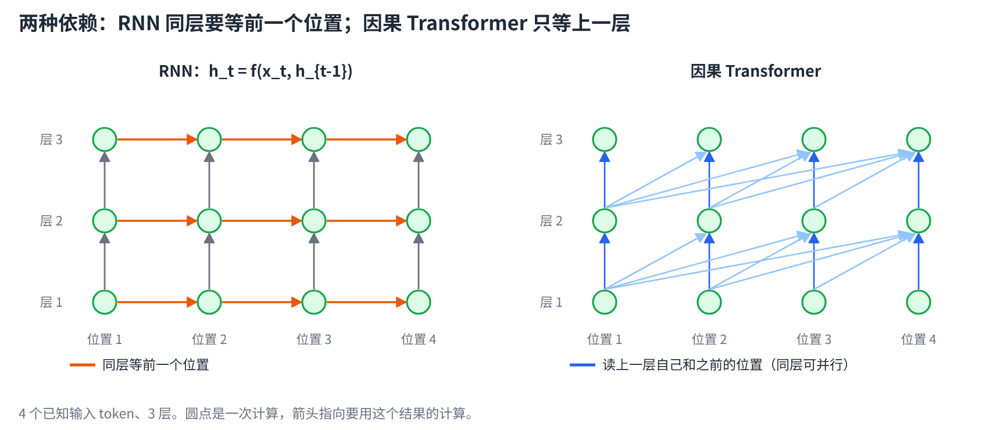
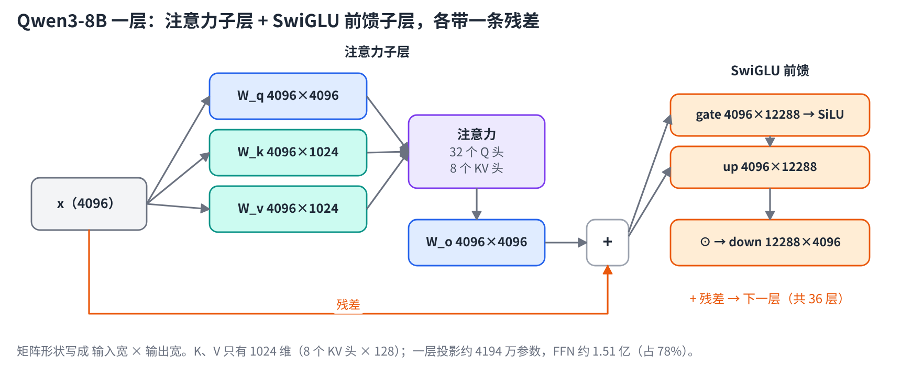
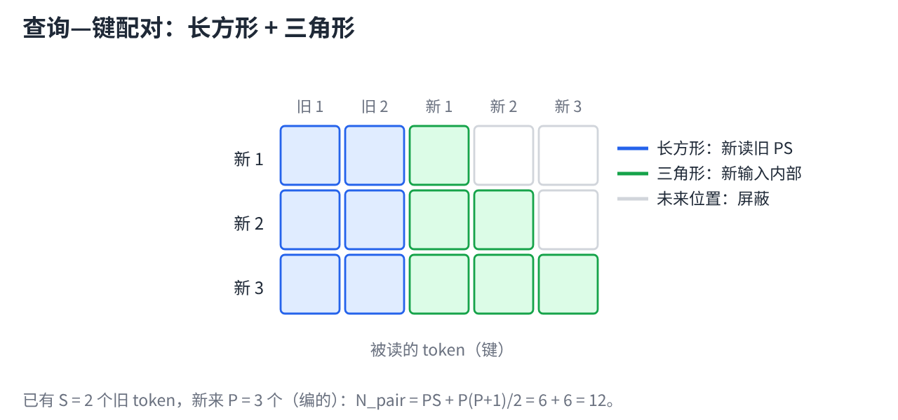
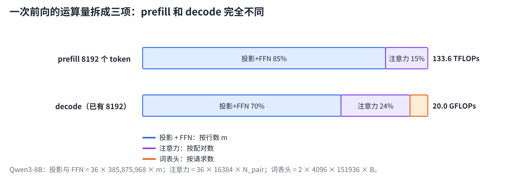
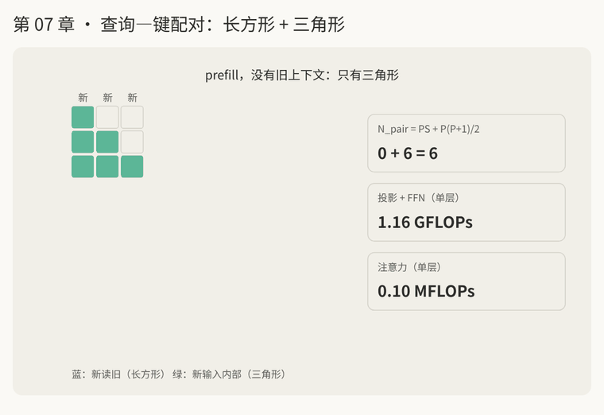

第 07 章 · 计算图与张量结构：一个 token 经过一层要算多少
本地运行
git clone https://github.com/wikieden/ai-infra-from-constraints
cd ai-infra-from-constraints/code/notebooks
pip install jupyterlab torch numpy
jupyter lab ch07_compute_graph.ipynb也可以下载后直接用 VS Code 打开 .ipynb 运行。需要 GPU 的章节在 Colab 里选「代码执行程序 → 更改运行时类型 → GPU」。
本章回答：Transformer 处理已知输入时，哪些计算能同时做、哪些必须等？Qwen3-8B 一层里有哪些矩阵，各有多大？处理 \(m\) 个 token、读 \(S\) 个旧 token 的上下文，一次前向要多少 FLOPs？
讲解日期：2026-11-24 · 上一章：第 06 章 需求如何推动架构 · 下一章：第 08 章 自回归生成的资源账
对应原文：materials/ai-infra-book/manuscripts/02-模型架构.md章首 L1–L13、§2.1 L15–L213（表 2-1 L166–L196）
本章缩写：BF16 = Brain Float 16（Google Brain 提出的 / 浮点 / 16 位）· FFN = Feed-Forward Network（前馈 / 网络）· FLOPs = 浮点运算总次数 · GEMM = GEneral Matrix Multiply（通用 / 矩阵 / 乘）· KV = Key-Value（键 / 值）· QK Norm = Query-Key Normalization（查询与键 / 归一化）· RNN = Recurrent Neural Network（循环 / 神经 / 网络）· RoPE = Rotary Position Embedding（旋转 / 位置 / 编码）· SiLU = Sigmoid Linear Unit（S 形 / 线性 / 单元）· SwiGLU = Swish-Gated Linear Unit（Swish 门控 / 线性 / 单元）。全部缩写见 缩写与术语表
第 1 部分把"70B 模型"当成一个整体，只用参数数和每参数字节数估算。从本章起拆开模型：一个 token 到底经过哪些矩阵、读哪些上下文。全章用原书的 Qwen3-8B：36 层，约 81.9 亿参数。
讲解
第一步：计算图：节点是运算，边是数据，箭头是先后（2026-11-24）
类比：做菜的工序图。 每道工序是一个节点（切菜、焯水、炒），工序之间的箭头说明"这一步要等那一步的结果"。箭头决定哪些工序能同时做：切菜和烧水可以同时，炒必须等切完。
原文 L17：节点的运算量决定计算需求，边上的张量决定传递的数据量，边的方向决定哪些运算必须先后执行。
两种依赖（原文 L23–L35）：4 个已知输入 token、3 层网络。

图 7-1 · 左：RNN，同一层里第 \(t\) 个位置要等第 \(t-1\) 个（横向箭头）。右：因果 Transformer，第 \(l\) 层的每个位置只读上一层里自己和之前的位置，同一层的 4 个位置可以同时算。
| 结构 | 同一层内要等谁 | 已知 4 个输入、3 层，最长依赖链（每格 1 单位、资源充足） |
|---|---|---|
| RNN：\(h_t = f(x_t, h_{t-1})\) | 前一个位置 | 沿位置和层都要串（练习里自己数） |
| 因果 Transformer | 不用等；只等上一层 | 3（只沿深度） |
生成又多一条依赖：下一次调用的输入是这次的输出，所以 decode 在调用之间是串行的（第 02 章）。
一句话：处理已知输入时，因果 Transformer 同层可以并行，只沿深度等；生成时又多出"等上一个输出"这条跨调用的串行依赖。
第二步：一个矩阵乘法的三个数：参数、运算、字节（2026-11-24）
类比：复印机。 一份底稿（权重矩阵）复印给 \(m\) 个人（\(m\) 行输入）：人越多，复印次数越多，但底稿只有一份；底稿换成更大的纸（输出更宽），底稿本身和每次复印的工作量都变大。
公式（原文 L48–L55）：\(m\) 个 token，每个 \(k\) 维，输出宽度 \(n\)：
- \(N_W\)：权重参数个数；\(F\)：运算量（每个输出元素是长度 \(k\) 的点积，乘、加各算一次）；\(M_W\)：权重字节数。
- \(m\) 翻倍：\(F\) 翻倍，权重不变（同一模型处理更多输入）。
- \(n\) 翻倍：权重和 \(F\) 都翻倍（模型的一层变宽）。
例子（编的小数）：\(m = 3\)，\(k = 4\)，\(n = 2\)，BF16。
| 量 | 算式 | 值 |
|---|---|---|
| \(N_W\) | \(4 \times 2\) | 8 个参数 |
| \(F\) | \(2 \times 3 \times 4 \times 2\) | 48 FLOPs |
| \(M_W\) | \(2 \times 8\) | 16 字节 |
\(m\) 是多少（原文 L65、L95）：\(B\) 条请求，每条本次输入 \(P\) 个 token，\(m = BP\)。prefill 一条 8192 token 的请求 \(m = 8192\)；decode 时每条只补 1 个 token，\(m = B\)。同一份权重，prefill 是"大矩阵乘大矩阵"，单请求 decode 接近"矩阵乘向量"。
一句话：一个投影的权重只看 \(k \times n\)，运算量还要乘上行数 \(m\)；prefill 和 decode 用同一份权重，输入形状却差几千倍。
第三步：Qwen3-8B 一层里的矩阵（2026-11-24）
类比：一条两道工序的流水线。 每层先过"注意力"（看看别的 token 说了什么），再过"前馈"（自己琢磨一下），每道工序旁边有一条直通的传送带（残差连接），把原料和加工结果加在一起。
配置（原文 L69–L76）：
| 配置 | 符号 | Qwen3-8B |
|---|---|---|
| 层数 | \(L\) | 36 |
| 隐藏维度 | \(d\) | 4096 |
| FFN 中间维度 | \(f\) | 12288 |
| 查询头 / KV 头 | \(n_Q\) / \(n_{\mathrm{KV}}\) | 32 / 8（每 4 个查询头共用一个 KV 头，第 01 章的 GQA） |
| 头维度 | \(d_h\) | 128 |
| 词表 | \(V\) | 151936 |

图 7-2 · 一层的骨架和每个矩阵的形状（输入宽 × 输出宽）。\(K\)、\(V\) 只有 1024 维，因为只有 8 个 KV 头。
例题 2-1（原文 L78–L88）：一层的投影和 FFN 有多少参数？
FFN 占这一层主要投影参数的 \(150.99 / (150.99 + 41.94) \approx 78\%\)；BF16 下一层的 FFN 权重是 288 MiB。
SwiGLU（原文 L146–L152）：
gate、up 两条分支把 4096 维升到 12288 维，gate 过 SiLU 后逐元素（\(\odot\)）调节 up，再由 down 降回 4096。三个矩阵，所以是 \(3df\) 个参数、\(6mdf\) FLOPs。
补基础：q、k、v、多头见《从零读懂 Transformer》第 9 章、第 13 章；SwiGLU 见第 20 章。
一句话：Qwen3-8B 每层约 1.93 亿个投影参数，FFN 占约 78%；投影和 FFN 的运算量是 \(385{,}875{,}968\,m\)，只和本次处理的 token 数有关。
第四步：注意力：查询和上下文配对，数一数有多少对（2026-11-24）
类比：新同学自我介绍后，挨个和班上已有的同学握手。 新来 \(P\) 个同学，班上原有 \(S\) 个：每个新同学要和所有老同学握手（长方形），新同学之间也按先来后到握手（三角形，后来的和先来的握，先来的不和后来的握）。
公式（原文 L119、L131、L137）：一个头的注意力
- \(\mathcal{M}\)：因果掩码，把未来位置的分数设成 \(-\infty\)；Qwen3 在点积前还做 QK Norm 和 RoPE。
- 有效的查询—键配对数（不含头数）：
- 每一对，每个查询头的 \(QK^{\mathsf T}\) 和 \(AV\) 各约 \(2d_h\) FLOPs，32 个头合计：

图 7-3 · 横轴是被读的 token，纵轴是新输入的查询。蓝色长方形是新 token 读旧 token，绿色三角形是新输入内部的因果访问，空白是被屏蔽的未来位置。
例子（原文图 2-4）：\(B = 1\)，\(S = 2\)，\(P = 3\)：\(N_{\mathrm{pair}} = 3 \times 2 + 3 \times 4 / 2 = 6 + 6 = 12\)。
两种增长（原文 L140–L142）：
- 没有缓存的 prefill，输入长度翻倍：投影的行数翻倍，配对数约变 4 倍。
- 把一条长输入拆成两条独立的短输入：\(BP\) 不变，投影行数不变，但跨越分界的配对没了，注意力变少。
- 只在前面加上下文（\(S\) 变大）：投影行数不变，每个新 token 的配对变多。
一句话：注意力的运算量按"查询—键配对数"算，长方形是读旧上下文，三角形是新输入内部；\(BP\) 相同不代表注意力相同。
第五步：把一次前向加起来（2026-11-24）
类比：结账时把每道工序的工时加起来：按人数算的工序（投影、FFN）、按握手次数算的工序（注意力），再加上最后一次统一打分（词表头）。
公式（原文 L203）：
- 第一项随行数 \(m\) 涨，第二项随配对数涨，第三项随实际做词表投影的 token 数 \(m_{\mathrm{out}}\) 涨（只预测下一个 token 时，每条请求只要最后一个 token 的分数，\(m_{\mathrm{out}} = B\)）。
- 词嵌入是查表，按 token ID 取一行，不算矩阵运算。
例子（原文 L206）：
| 情形 | \(m\) | \(N_{\mathrm{pair}}\) | \(F_{\mathrm{matrix}}\) |
|---|---|---|---|
| prefill：一条请求 8192 个输入 token（\(S = 0\)，\(P = 8192\)） | 8192 | \(8192 \times 8193 / 2 = 33{,}558{,}528\) | ≈ 133.6 TFLOPs |
| decode：已有 8192 个上下文，再补 1 个 token（\(S = 8192\)，\(P = 1\)） | 1 | \(8192 + 1 = 8193\) | ≈ 20.0 GFLOPs |

图 7-4 · 同一模型，两种输入形状。prefill 里投影和 FFN 占大头，注意力已占约 15%；decode 只算 1 行，但注意力要读 8193 个位置。
KV 缓存省掉的是旧 token 的投影和 FFN 重算；当前查询和整段上下文的注意力还是要算，而且要从缓存里读出旧 token 的 \(K\)、\(V\)（下一章算读多少）。
场景代码：用 PyTorch 数一个 Qwen3-8B 配置的参数，不需要下载权重（meta 设备只建形状、不分配内存）：
import torch
from transformers import AutoConfig, AutoModelForCausalLM
cfg = AutoConfig.from_pretrained("Qwen/Qwen3-8B") # 只下载 config.json
with torch.device("meta"):
model = AutoModelForCausalLM.from_config(cfg) # 只有形状，没有数据
layer = model.model.layers[0]
n_proj = sum(p.numel() for n, p in layer.self_attn.named_parameters() if n.endswith("proj.weight"))
n_ffn = sum(p.numel() for p in layer.mlp.parameters())
print(n_proj, n_ffn) # 41943040 150994944
print(sum(p.numel() for p in model.parameters()) / 1e9) # 约 8.19（十亿）
一句话：一次前向 = 36 层 ×（按行数算的投影和 FFN + 按配对数算的注意力）+ 末端词表头；8192 token 的 prefill 要 133.6 TFLOPs，之后每步 decode 约 20 GFLOPs。
动画演示：查询—键配对：长方形 + 三角形

可交互版：animations/07-compute-graph.html（两个滑块：已有上下文 \(S\)、本次新输入 \(P\)，各 0–12；\(B = 1\)）。
怎么看：
- 每一行是一个新输入的查询，每一列是一个可以被读的 token（对应第四步）；
- 播放时先只有新输入（\(S = 0\)）：只有三角形；再加上旧上下文：多出一块长方形；
- 右边的数字是 \(N_{\mathrm{pair}}\) 和注意力运算量 \(16384\,N_{\mathrm{pair}}\)（单层）、投影和 FFN 运算量 \(385{,}875{,}968\,P\)（单层）；
- 最后一帧是 decode：\(P = 1\)，只剩一行，长度是 \(S + 1\)。
练习与作答记录
题 1（第一步）：4 个已知输入 token、3 层，每层每 token 算 1 个单位时间，资源充足。RNN 处理完全部输入的最长依赖链是多长？因果 Transformer 呢？再加一个待生成的输出位置，计算它之前必须等哪个节点？
作答记录：（待作答）
题 2（第二、三步）：Qwen3-8B 一层的投影和 FFN，处理 \(m = 20\) 个 token 要多少 FLOPs？如果 FFN 中间维度从 12288 改成 6144，一层的投影参数总数变成多少？
作答记录：（待作答）
题 3（第四步）：\(B = 2\) 条请求，每条已有 \(S = 20\) 个上下文 token，本次各输入 \(P = 4\) 个。\(N_{\mathrm{pair}}\) 是多少？如果把它们合成一条请求（\(B = 1\)，\(S = 20\)，\(P = 8\)），\(m\) 变不变？\(N_{\mathrm{pair}}\) 变不变？为什么？
作答记录：（待作答）
原书练习 2-1（L39–L41，RNN 与 Transformer 的依赖图）、练习 2-2（L210–L212，\(B = 4, S = 4096, P = 1024\) 的三项运算量与前缀复用）。想多练可以做。
口诀
节点算，边上传，箭头定先后；
行数乘权重，权重不随行数涨；
一层投影两亿个，FFN 占八成；
新旧握手长方形，新人之间三角形。
本章复习卡片
I23（RNN 与因果 Transformer 的依赖）、I24（\(N_W\)、\(F\)、\(M_W\) 三个式子）、I25（Qwen3-8B 一层的参数和运算量）、I26（\(N_{\mathrm{pair}}\) 与注意力运算量）。练习做完后，按答错、卡住的地方再补。
附录 · 延伸阅读
留给以后深入学习用，不影响本章主线。★ 是建议先读的。
推荐阅读
| 读什么 | 读哪里 | 读它为了什么 |
|---|---|---|
| ★ AII 第 2 章 | 章首 L1–L13、§2.1 L15–L213 | 本章原文；表 2-1 是全书模型账的起点 |
| AII 第 2 章"模型矩阵查阅表" | L933 起 | 五个模型的每个矩阵尺寸，当工具表查 |
| ★ 《从零读懂 Transformer》第 17 章 | 全章 | 因果掩码为什么呈三角形 |
| 《从零读懂 Transformer》第 20 章 | SwiGLU 一节 | 门控 FFN 的来历 |
| 《CUDA 从线程到 Tensor Core》第 22 章 | 全章 | 因果分块跳过上三角、分数在片上用完即释放（原文 L140） |
Qwen3 技术报告 / config.json |
模型配置 | 36 层、4096、12288、32/8 头、151936 词表的出处 |
数学原理
- 矩阵乘法计数：\(m \times k\) 乘 \(k \times n\)，每个输出元素 \(k\) 次乘、\(k\) 次加（近似），共 \(mn\) 个元素，约 \(2mkn\) 次运算。
- 三角形数：\(1 + 2 + \cdots + P = P(P+1)/2\)，所以全注意力随长度约按平方增长。
- Softmax：\(a_j = e^{s_j} / \sum_i e^{s_i}\)，系数都为正、和为 1；除以 \(\sqrt{d_h}\) 防止分数随头宽增大而过大。
公式清单
| 公式 | 意思 |
|---|---|
| \(N_W = kn\)，\(F = 2mkn\)，\(M_W = b_W kn\) | 一个投影的参数、运算、字节 |
| \(m = BP\) | 本次参与投影的 token 数 |
| \(N_{\mathrm{proj}} = 2d^2 + 2d \cdot n_{\mathrm{KV}} d_h\) | Qwen3-8B 一层的注意力投影参数 |
| \(N_{\mathrm{FFN}} = 3df\) | SwiGLU 的参数 |
| \(N_{\mathrm{pair}} = B\,(PS + P(P+1)/2)\) | 有效查询—键配对数 |
| \(F_{\mathrm{attn}} = 4\,n_Q\,d_h\,N_{\mathrm{pair}}\) | 注意力的矩阵运算 |
| \(F_{\mathrm{matrix}} = L\,(F_{\mathrm{linear}} + F_{\mathrm{attn}}) + 2\,m_{\mathrm{out}}\,dV\) | 一次前向的主要矩阵运算 |
代码对照：把本章的数字用代码算一遍
纯 Python，不需要 GPU，也不下载模型。代码在仓库本地
ai-infra/solutions/chapter-code/ch07_compute_graph.py，配套测试tests/test_ch07.py：
bash cd ai-infra/solutions/chapter-code uv run python ch07_compute_graph.py # 一步一步打印 uv run pytest tests/test_ch07.py
讲义 ↔ 代码：
| 讲义 | 公式 | 写法 | 跑出来 |
|---|---|---|---|
| 第二步 小例子 | \(kn\)、\(2mkn\)、\(b_W kn\) | matmul_cost(3, 4, 2) |
8 个参数、48 FLOPs、16 字节 |
| 第三步 一层的参数 | \(2d^2 + 2d \cdot 1024\)、\(3df\) | layer_params(QWEN3_8B) |
41,943,040 和 150,994,944，FFN 占 78% |
| 第四步 配对数 | 长方形 + 三角形 | n_pair(1, 2, 3)、n_pair_bruteforce(1, 2, 3) |
12 |
| 第五步 prefill 8192 | 三项相加 | forward_flops(QWEN3_8B, 1, 0, 8192) |
133.6 TFLOPs |
| 第五步 decode | 同上 | forward_flops(QWEN3_8B, 1, 8192, 1) |
20.0 GFLOPs |
关键几行：
def forward_flops(c, B, S, P):
m = B * P # 本次参与投影的 token 数
linear = 2 * m * sum(layer_params(c)) # 投影 + FFN：按行数
attn = 4 * c["n_q"] * c["d_h"] * n_pair(B, S, P) # 注意力：按配对数
head = 2 * B * c["d"] * c["vocab"] # 词表头：每条请求只算最后一个 token
return c["L"] * (linear + attn) + head
代码里才看得到的 3 件事：
n_pair_bruteforce用两重循环逐个数"第 \(i\) 个查询能看第 \(j\) 个 token 吗"，和公式n_pair对上；规模大时只用公式。- 词表头只按
B算（每条请求一行），不是按m；如果误按 8192 行算，prefill 会多出约 10 TFLOPs。 - 运算量只统计矩阵乘；归一化、RoPE、SiLU、残差这些逐元素运算没算进去（原文 L190）。
自己改一改（不影响练习答案）：
- 把 prefill 长度从 8192 改成 4096、16384，看注意力那一项占比怎么变。
- 把
QWEN3_8B的n_kv改成 32（不用 GQA），看一层投影参数变成多少。 - 用
n_pair_bruteforce验证几组小的 \((B, S, P)\)。